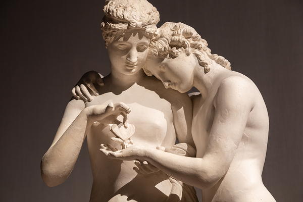

"What then is Love?" I (Socrates) asked, "Is he mortal?" "No." (Diotima replied) "What then?" "As in the former instance, he is neither mortal nor immortal, but is a mean between the two." "What is he, Diotima?" "He is a great spirit, and like all spirits he is intermediate between the divine and the mortal." "And what," I said, "is his power?" "He interprets," she replied, "between gods and men, conveying and taking across to the gods the prayers and sacrifices of men, and to men the commands and replies of the gods; he is the mediator who spans the chasm which divides them, and therefore in him all is bound together, and through him the arts of the prophet and the priest, their sacrifices and mysteries and charms, and all, prophecy and incantation, find their way. For God mingles not with man; but through Love." --Plato's Symposium
Aphrodite is often deemed the Goddess of Love, her only-begotten child in some accounts is Love, and, in some accounts, it was this Love which created the Universe by making love with the primordial Chaos. To love then is an act of worship or devotion to the primal mover of all things, and so it was seen. In this region and time there appears to be not a straight line between priest(ess) and prostitute. For many men who served the Goddess, this meant serving in the woman's role. Sacred prostitutes, both men and women, followed the Goddess from her ancient Mesopotamian home as she traveled around the Mediterranean. That sacred prostitutes existed implies that sex itself was seen as sacred, or, at least, that sex can be harmonious with Love.
That of the Immortals did not exist until Eros (Love) had brought together all the ingredients of the world, and from their marriage Heaven, Ocean, Earth and the imperishable race of blessed gods sprang into being. (...) We are the offspring of Eros; there are a thousand proofs to show it. We have wings and we lend assistance to lovers. How many handsome youths, who had sworn to remain insensible, have opened their thighs because of our power and have yielded themselves to their lovers when almost at the end of their youth, being led away by the gift of a quail, a waterfowl, a goose, or a cock.
--Aristophanes, 'Birds' 414 BCE
There came to Rome from Phrygia (in modern day Turkey) a version of the Goddess whom the Romans called Cybele, the Magna Mater (Great Mother). Cybele's lover Attis, who, like Adonis, was killed in one account by a boar though in another account died from the wound of his self-castration, his body then eternally preserved. In yet another account, Attis castrates himself but doesn't die. Rather, he lives on as a transgender woman riding with the Goddess wherever she went in her lion-drawn chariot. So also the priests of Cybele, the galli, would ritually castrate themselves and dress in women's clothes--perhaps their own spiritual death and resurrection--a practice apparently descended from Mesopotamia where gala, priests of Inanna, were known to engage in similar behavior.
Men who joined the priesthood in devotion for Inanna became women for all intents and purposes, adopting female names and singing in the Sumerian eme-sal dialect, reserved for feminine speakers to render the speech of female gods. Source
It should be pointed out that in relationship to the Divine, it is often seen in religion that the soul takes the feminine role. So, we see in the Bible, the nation of Israel is depicted as God's wife, and in Greek myth, Psyche, the personification of the soul, is represented as a woman in Soul's encounter with Love. Love in the end becomes her husband, and she his wife, and in so doing, Soul becomes divine.
Psyche and Eros, Antonio Canova, 1793
In the statue above, Eros hands Psyche a butterfly. The gift intimates the metamorphosis which the soul must undertake. Psyche is similarly depicted in art with butterfly wings sprouting from her back which stand in juxtaposition to Eros's bird wings as a sign that she was not born divine, but learned the lesson of the caterpillar which dies so that the butterfly can rise.
"Love of wisdom" is how the word philosophy is typically translated, but people love wisdom which leads to a life they love. In other words, it is not wisdom which leads to a life we hate. Understanding one's relationship to the Universe and one's responsibility in that relationship, that is one's ability to respond, is what lends to a life worth loving or even a life worth living. So we could say this understanding is what wisdom is, and if we hold that Life is something larger than us then wisdom is the way to be a good lover to that something. And if we hold that Love is something larger than us, then being a good lover may mean accepting that Love has its own way, and in that case, the wisdom of Love would be the object of pursuit for those who love wisdom.
If I speak in the tongues of men or of angels, but do not have love, I am only a resounding gong or a clanging cymbal. If I have the gift of prophecy and can fathom all mysteries and all knowledge, and if I have a faith that can move mountains, but do not have love, I am nothing. If I give all I possess to the poor and give over my body to hardship that I may boast, but do not have love, I gain nothing. (...) Love never fails. But where there are prophecies, they will cease; where there are tongues, they will be stilled; where there is knowledge, it will pass away. For we know in part and we prophesy in part, but when completeness comes, what is in part disappears. 1 Corinthians 13
The myth of Venus and Adonis is but one of many Greco-Roman myths of a certain type: transformation myths which center on a love pursuit. This type of myth is congruent with Alchemy at large, for in general there is no Alchemy without fire. The Alchemist's own pursuit will turn towards the idea that the Alchemist is being pursued, or rather, that the Alchemist is running from the fire.